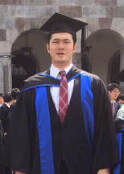

YUE ZHU “Hector Shuku"

MAEDA Moritaka
توسعه مدل تعادلی تقاضا عرضه جهانی محصولات با توجه به
رابطه بین بازار مواد غذایی و بیواتانول


توسعه مدل تعادلی تقاضا عرضه جهانی محصولات با توجه به
رابطه بین بازار مواد غذایی و بیواتانول
YUE ZHU “Hector Shuku”
در طول بیش از دو سال در آزمایشگاه استاد توکیماتسو، پیشرفت را هدف قرار دادم و به سختی برای آن تلاش کردم، و در عین حال از استاد و دیگر دانشجویان بسیار کمک گرفتم. در نتیجه، ارزش های لازم را برای یک عضو آینده جامعه ژاپن ایجاد کردم. علاوه بر این، دانش زیادی درباره فرهنگ های گوناگون بدست آوردم که از کتاب های درسی قابل یادگیری نمیباشد.
در ابتدا، بسیار از فرهنگ و دانش در آزمایشگاه اطلاعات دریافت کردم و بنابراین٬ این فرایند می تواند آماده سازی برای تمرین در کار واقعی باشد. در آزمایشگاه، تکنولوژی های زیست محیطی، سیستم های انرژی، MOT (مدیریت تکنولوژی) و دانش اقتصادی و مالی را آموختم، و من فکر می کنم که بدلیل تنوعی بالای این دانش٬دریافت اینگونه از اطلاعات هرگز خسته کننده نمی باشد. علاوه بر این، در مورد زبان خارجی به عنوان ژاپنی و انگلیسی، من مهارت های شنیداری، صحبت کردن، خواندن، نوشتن و ترجمه را بر اساس تجربه ارائه شده یا فعالیت های دیگر در داخل یا خارج از دانشگاه بهبود بخشیدم.
ثانيا، من موفق به دست آوردن فرصتی برای دسترسی به فن آوری پیشرفته و علم و فرهنگ در ژاپن و یا خارج از کشور شدم. من فرصتی برای مطالعه در جلسه ای که توسط استاد معرفی شده بودم، نه تنها تاریخچه توسعه ی تکنولوژی در ژاپن را متوجه شدم و فهمیدم که بالا رفتن کیفیت تکنولوژی در ژاپن به دلیل مدیریت و فناوری بالای ژاپن در زمینه تکنولوژی است. علاوه بر این، زمانی که یک سفر کوتاه مدت به ایالات متحده داشتم، آزمایشگاه به من کمک زیادی کرد. از طریق فعالیت های گسترده٬ تبادل تجربه بحث و گفتگو با محققان عالی علمی و یا صاحبان کسب و کار به دست آوردم.
در نهایت به عنوان مهمترین چیز،متوجه نگرش جدی پژوهشی نسبت به علم و دانش توسط استادان و سایر دانشجویان در آزمایشگاه شدم. آنها همیشه تمرکز خود را بر روی تحقیق و بحث درباره دست آورد های مختلف علمی می کردند وهمین بحث ها کمک زیادی به من در یادگیری کرد. تجربه سخت کار کردن برای بودن همان شخص قبل یک گنج بزرگ برای من است؛ که این ممکن است به گسترش مداوم شغل آینده و مرحله بالاتر در محل کار منجر شود.
علاوه بر این، هنگامی که ما معایب آزمایشگاه را ذکر می کنیم، این است که زندگی آزمایشگاهی خیلی شلوغ است. اساسا هیچ زمانی برای شما نمی ماند که در خارج از آزمایشگاه کار پاره وقت انجام دهید. به عنوان یک عضو آزمایشگاه، بهتر است از قبل هزینه های زندگی خود را در نظر بگیرید، و پیش از ورود٬ به دنبال منبع تامین آن بگردید
زندگی 2.5 ساله در آزمایشگاه توکیماتسو ممکن است برای کل سفر زندگی شما خیلی کوتاه باشد، اما این واقعا یک تجربه زندگی رضایت بخش و درخشان است. با تعهد برای بدست آوردن، تجربه یک زمان ضروری در جاده زندگی من بود برای پیروزی رویای نهایی. در نهایت می خواهم بگویم که بسیار از پروفسور توکیماتسو و دیگر اعضای آزمایشگاه خود سپاسگزارم.
Professor:
من هرگز چنین ایمیل قوی دریافت نکردم که با عنوان [پروفسور توکاماتسو] آغاز شده است، زمانی که این مطلب را دریافت کردم. او در اصل از چین است، در لیورپول تحصیل کرده و در ژاپن دوست دارد. او با استفاده از تصویرهای مختلف به تحلیل تمام درس ها و مهارت های که او در طول ثبت نام خود را به دست آورد به نمایش می گذاشت. مقاله ای که او به دست آورد، در حال حاضر یکی از موارد ارزشمند من است. این اولین تجربه من به عنوان معلم بود، که بر من ارزش آموزش دانش آموزان را تایید میکرد.
او برنامه، کلاس ها و تحقیقات خود را با توجه به تقویم دقیق برنامه ریزی کرد. در طول زمان محدود، او موفق به مطالعه در مورد بیمه Actuary of Life و انجام فعالیت های شکار فرصت شغلی. او خوش شانس بود که به موسسه فناوری روچستر رفته و مطالعات خود را تحت نظارت آقای میتسوتاکا ماتسوموتو انجام داد. او در مورد تجزیه و تحلیل چند رگرسیون از همکارش ماساتاکا میدا یاد گرفت. او (از جمله من)احساس می کند که با محیط اطرافش خوشحال است. با توجه به سهم خود از زمینه های تمرکز آزمایشگاهی، به عنوان یکی از روش های پیش بینی فنی، او از اقتصاد تکنیکی استفاده کرد و عمیقا درباره کاربرد پذیری تکنولوژی مطالعه کرد. او همچنین از روش آماری برای تحليل عاملي استفاده کرد.
در مورد او، به دلیل تعیین یک هدف وبهبود آن به طور مداوم و به تدریج به دست آوردن نتایج یک راه مناسب٬ باعث به حرکت به جلو و پیشرفت شد. من بسیار خشنود هستم. با شخصیت خوش بینانه و مهارت ارتباطی پیشرفته او با ارائه سخنرانی خود بدون درخواست کمک از سوی سرپرست خود پایان داد. به عنوان یک دانشجوی کارشناسی ارشد، شایسته است که در مورد او به خوبی نوشته شود. با توجه به سهم خود در آزمایشگاه، ژاپنی، چینی و انگلیسی، و دستیابی به سبک ژاپنی ارتباطات، و نیز مسئولیت احزاب آزمایشی قابل توجه است که این فوق العاده است.
از میان انواع مختلف مدارس و آزمایشگاه های فارغ التحصیل، من آزمایشگاه توکیماتسو را انتخاب کردم. این به این دلیل است که پروفسور توکاماتسو بسیار تاثیربر من داشت، او به من اعتقاد داشت که می توانم تحقیقم را انجام دهم. پروفسور توکاماتسو واقعا یک محیط راحت برای تحقیق ایجاد کرده است و اخلاق خوبی دارد. در نتیجه، تصویر من با آزمایشگاه هماهنگ است.
پروفسور توکاماتسو فرصت خوبی برای تحصیل در خارج از کشور به من داد و من توانستم در خارج از کشور در سنگاپور و ایالات متحده تحصیل کنم. صادقانه عرض کنم، مطالعه در خارج از کشور تنها خاطراتی را درباره زمان سختی در زندگی و تحقیقات برای من به ارمغان آورد. من هنوز هم اعتقاد دارم که این تجربه بدون شک به زندگی آینده من کمک خواهد کرد
علاوه بر این، آزمایشگاه توکیماتسو، با آزمایشگاه یوشیکاوا و آزمایشگاه تاکاهاشی، با هم سمینار مشترک دارند. دانشجویان خارجی از کشورهای مختلف می آیند من بسیاری از محرک ها را دریافت کردم و دانش بسیاری از فرهنگ را از آنها آموختم. علاوه بر این، من با دوستانی آشنا شدم که در طول زندگی شاید امکان همنشینی با آن ها را نداشتم.
پس از وارد شدن به آزمایشگاه توکامیتسو، من احساس کردم وارد محیط کاملا متفاوتی شده ام. با استفاده از آن محیط جدید، من رشد عقلی و انسانی زیادی کردم. در آینده من می خواهم از تجربیات زندگی در آزمایشگاه استفاده کنم تا به جامعه کمک کنم. در صورت امکان، من تمایل دارم به توسعه بیشتر ژاپن و جهان کمک کنم.
در نهایت، من برای کسانی که مایل به وارد شدن به آزمایشگاه توکیماتسو هستند توصیه میکنم که به نظر من، آزمایشگاه ما برای کسانی که همیشه در انتظار فرمان هستند مناسب نیست، اما می تواند یک گزینه عاقلانه برای افرادی باشد که مایل به انجام تحقیقات خود برای دستیابی به اهداف دانشگاهی خود هستند. هرکسی که درباره آزمایشگاه در مورد محیط زیست علاقه مند است یا مایل است بیشتر بداند،حتما به آزمایشگاه توکیماتسو مراجعه کنید.
Professor:
من قبل از رسیدن به این شغل و دریافت ایمیل شخصی خود از دانشگاه، از او ایمیل دریافت کردم و این اولین ایمیل دریافتی من بود. وقتی او در جهت آزمایشگاه شرکت کرد و من مشخصات شخصی او را دیدم، شگفت زده شدم. این به این دلیل بود که متوجه شدم او تحصیلات خود را تحت نظارت استادان بزرگ من، استاد موری شونسوکه ، که یکی از زمینه های تخصصی من را هم تشکیل می داد. من تعجب می کردم که چرا او برای آزمایشگاه ما درخواست کرد. بعدها، متوجه شدم که او حتی بیش از 800 امتیاز در آزمون TOEIC به دست آورده و بالاترین نمره آزمون سیستم ارزش را دریافت کرده.
او که موفق به پذیرش در مدرسه شما شد، من را تحت تاثیر قرار داد وقتی که با او ارتباط برقرار کردم، چرا که نشان داد که چقدر متعهد شده است، و نشان دادن علاقمند به رسیدن به اهداف خود است. شرکت او و رهبری که او نشان داد، در کنار همکاران خود فوق العاده بود. بعدا متوجه شدم که این ویژگی ها و مهارت ها را از طریق مراقبت از خانواده اش توسعه داده و به لطف بازی بیس بال که او برای مدت طولانی بازی کرده است، مهارت های ارتباطی و تصمیم گیری را توسعه داده است. احساس می کنم که من کسی هستم که از او خیلی چیزها آموختم
من نمی توانم بشمارم که چند بار او به مدیریت آزمایشگاه ما کمک کند. همراه با همکاران تاکاهاشی و ایزومی، آنها نه تنها به جشن خداحافظی Bayu کمک کردند - که در تابستان سال 2014 جای گرفت -و از مهمانان ما در ورودی آزمایشگاه استقبال کردند، بلکه آنها کار Ore را هم دریافت کردند و به بیش از 5 دانشجوی چینی با ورق ورودی و مصاحبه شغلی خود کمک کردند. در کنار مدیریت سه آزمایشگاه مشترک، وی در توسعه وب سایت آزمایشگاه (بیش از یک سال) هم کمک کرد و به تجزیه و تحلیل آمار و نوشتن به سال پایینی های خود هم آموزش داد.
با توجه به آزمایشگاه، او پیش رفت و ایده های خود را به کار گرفت. او موفق به توسعه پایان نامه فارغ التحصیلی خود و تعیین اهداف برای شرکت در کنفرانس های داخلی و بین المللی شد. با هدف انجام این کار، تلاش کرد و مقاله ای نوشت و برای جلسات بین المللی همکارانه ای که رتبه بالا را به خود اختصاص داده است، موفق به ارائه پوستر خود شد. او مسیر تحصیلی کسب و کار منابع بود (به ظاهر، همانند اعضای خانواده اش)؛ از این رو او اولین سال خود را از اعزام کوتاه مدت در خارج از کشور در سنگاپور گذراند و سپس با اتمام جلسه بین المللی، تحصیلاتش را در موسسه فناوری روچستر در شهر نیویورک ادامه داد. او همچنین دو مقاله برای پایان نامه فارغ التحصیلی خود نوشته است. به عنوان سرپرست٬ من نتوانستم او را به اندازه کافی راهنمایی کنم، اما خوشحالم که فرصتی برای حمایت از او در دو سال گذشته داشتم و انتظار دارم او بتواند رویای خود را در موقعیتی عالی در برخی از شرکتها به دست آورد.
بی شک حضور در دانشگاه توکیوتک جهت ادامه تحصیل در مقطع دکترا، جزو بهترین سال های زندگی بنده در ژاپن بوده است. حضور در آزمایشگاهی با دیدگاه ها، افکارها و زمینه های مختلف علمی، فرصت گسترش محدوده تحقیقات علمی را دو برابر نمود. موضوعات تحقیقاتی در زمینه اقتصاد-تکنولوژی، اقتصادی-اجتماعی و ارزیابی ریسک محیطی، جزو سه زمینه پژوهشی مهم در آزمایشگاه آقای پروفسور کوجی توکیماتسو می باشد، که هدف این سه بخش رسیدن به یک سیستم یکپارچه در ارزیابی انرژی می باشد.
اعضای آزمایشگاه، با توجه به این سه زمینه تحقیقاتی، پروژه های خود را تعریف نموده و مشغول به فعالیت تحقیقاتی می گردند. طبیعتاً، ارتباطات اعضای آزمایشگاه، با افزایش سطح اشتراک بین پروژه ها تعریف شده، افزایش می یابد. برای مثال، فعالیت مشترک بنده با یکی از اعضای آزمایشگاه در زمینه علوم اجتماعی، نگرشی جدید در بنده ایجاد نمود که تجربه بسیار باارزشی بود و در نهایت منجر به توسعه زمینه تحقیقاتی بنده در زمینه اقتصادی-اجتماعی گردید. فارغ از بحث های علمی، اعضای آزمایشگاه این فرصت را دارند تا در هر ترم تحصیلی، با حضور در جشن ها و مهمانی های مختلف آزمایشگاه شرکت نموده و لذت ببرند. کارائوکه یکی از جذاب ترین بخش های این جشن ها می باشد که توصیه می نمایم آن را هرگز از دست ندهید.
بنده فرصت را غنیمت شمرده و در اینجا از استاد راهنمای گرامی خود، آقای پروفسور کوجی توکیماتسو، تقدیر و تشکر می نمایم که تلاش نمودند تا فضایی دوستانه، برای بنده ایجاد نمایند تا بتوانم در سمینارهای هفتگی و سایر گردهمایی، تحقیقات علمی خود را ارائه دهم. نتیجه تلاش ایشان، ارتقاء ارتباطات موثر و همکاری با افراد خبره در زمینه فعالیت های بنده بود، که بی شک در رشد فکری بنده سهم به سزایی داشت. حضور و ارائه پژوهش های علمی در موسسات تحقیقاتی انرژی دانشگاه ملی سنگاپور، دانشگاه نانیانگ سنگاپور و موسسه تحقیقات- صنعتی تایوان از جمله موارد فوق می باشد که نه تنها منجر به تقویت مهارت های ارائه در بنده گردید، بلکه افزایش سطح اطمینان و خودباوری را نیز داشت. یک موضوع دیگر که نیاز است در اینجا مطرح نمایم این است که آقای پروفسور توکیماتسو فقط استاد راهنمای بنده در این مدت نبوده است، ایشان علاوه بر این موضوع، در موضوع کاریابی بنده در ژاپن همیشه مرا راهنمایی کرده است که فراتر از وظایف یک استاد راهنما می باشد.
در ضمن بنده این فرصت را داشتم تا بتوانم دو مرحله به عنوان دستیار استاد در دانشگاه توکیوتک فعالیت نمایم که تجربه جالبی در ارتباط با دانشجویان خارجی و ژاپنی بود. در آخر، می بایست یادآور شوم در صورتیکه مایل به انجام تحقیقات مرتبط با اقتصاد-انرژی تحت نظر استادی می گردید که به شما آزادی کامل دهد، آزمایشگاه دکتر توکیوماتسو می تواند یک گزینه برای شما باشد.
دو دلیل برای اینکه من آزمایشگاه توکیماتسو را انتخاب کردم وجود دارد. اول آنکه آزمایشگاه توکیماتسو نه تنها یک بینش تکنولوژیکی منحصر به فرد است، بلکه یک بینش اجتماعی و اقتصادی است، گرچه در دانشگاه علم و فناوری است. دوم، برای آنکه استاد توکیماتسو دانش آموزش استراتژی را دارد: دانش آموزان توانایی هایی را که پس از فارغ التحصیلی مفید است، به دست می آورند و من متعقدم پیدا کردم پیوستن به این آزمایشگاه انتخاب صحیح بود و از ایشان عمیقا قدردانی کنم.
به خصوص به دلایلی ، چیزهای زیادی وجود دارد که دانش آموزان نمی توانند در آزمایشگاه های دیگر در توکیو تک بدست آورند. پس از پیوستن به یک برنامه تحصیلی کوتاه مدت در انگلستان در لیسانس ، من مشتاقانه به دنبال تحصیل در خارج از کشور بودم. با این حال، اعتقاد داشتم که در مدت کوتاه مانند برنامه سفر انگلیس مقدار یادگیری محدود است. بنابراین من به دنبال فرصت برای تجربه تحقیق و یا کارآموزی در کشورهای دیگر هم بودم. پروفسور توکیماتسو به من کمک زیادی کرد تا این کار را بکنم. او پروفسور دیگری را معرفی کرد که به طور بالقوه به علاوه پشتیبانی مالی من در سراسر جهان کمک کرد. به دلیل این فرصت ها، من توانستم به صورت فعال مهارت های مدیریتی، مهارت های ارتباطی، مهارت انگلیسی و غیره را دریافت کنم. من مطمئن هستم که این مهارت ها حتی پس از فارغ التحصیلی مفید خواهد بود.
من می دانم بعضی از استادان دانش آموزان را مانند کارگر برای تحقیقات خود در نظر می گیرند. با این حال، پروفسور توکیماتسو کاملا متفاوت است. او همیشه دانش آموزان را به عنوان فرزندانش در نظر می گیرد و دنبال می کند که چگونه می تواند به دانش آموزان کمک کند.
با این حال، در طول زندگی فراگیری در توکیو تک بسیار خوب بود. متقاضیان باید این سه چیز را به یاد داشته باشند. اول، به دلیل اینکه آزمایشگاه ما دارای زمینه های مختلفی از مطالعات است، ناظر زمان لازم برای آموزش همه چیز را از اساسی به دانش آموزان ندارد. ما همیشه باید خودمان یاد بگیریم. همچنین، آمادگی کار بی وقفه برای مدت دو سال باشید. لازم به انجام تحقیقات، مطالعه در خارج از کشور (و آماده سازی)، کلاس ها، فعالیت های «شکار شغل» و کار دفتر آزمایشگاه در عرض دو سال است که شاید کافی نباشد. با این حال، برای دانش آموزان ورودی به توکیو تک بسیار مشکل است. همچنین تمرکز بر روی تحقیق مشکل است. از آنجا که آزمایشگاه توکیماتسو منشی ندارد دانش آموزان ژاپنی مسئول وظایف مختلف اداری و حمایت از دانشجویان خارجی هستند، برای همین اتفاقات غیر منتظره زمان زیادی برای حل مشکل میبرد.
شما می توانید زمان برای کار نیمه وقت را هم درخواست کنید، هرچند توصیه نمی شود. گرچه هزینه تحصیل در خارج از کشور توسط بورس تحصیلی و آزمایشگاه کمک میشود، اما پول لازم برای زندگی روزمره و هزینه های حمل و نقل برای من همیشه منبع استرس بود. در زمان ثبت نام درخواست بورس تحصیلی کردم یا حتی گرفتن قرض را توصیه میکنم.
با این حال، شکی نیست که این یک محیط است که دانش آموزان می توانند رشد زیادی داشته باشند. اگر علاقه مند هستید، لطفا از آزمایشگاه بازدید کنید، با استاد و دانش آموزان سال بالایی خود صحبت کنید و ببینید آیا آزمایشگاه ما مناسب است یا خیر
Tokimatsu Comment:
اولین بار که با او ملاقات کردم، آغاز ماه آوریل در سه سال پیش بود، در جلسه رسمی دانشجویان آینده برای دپارتمان قدیمی ما. او یکی از دانشجویان برای سه آزمایشگاه ما بود، که به ما برخی از پرسش ها مربوط به پایداری و کیفیت زندگی را داده بود. او قبل از مراجعه به فرم درخواست برای بازدید از آزمایشگاه سه بار به طور فعالانه با من تماس گرفته بود و آنچه را که او در ذهن و خواست داشت مطرح کرده بود. هرچند او استرس داشت تا آنها را به من منتقل کند، اما من بارها و بارها به او قوت قلب دادم تا به طور صریح و بدون استرس با من صحبت کند
پس از ثبت نام، او همیشه قدردانی خود را برای من بسیار مودبانه و روشن هنگام عبور از جلوی دفتر من ابراز میکرد. من از او اهمیت چنین عدبی را یاد گرفتم. من به زودی پس ازگفتگو با او به این نتیجه رسیدم که او همیشه تلاش برای انجام بهترین خود را میکند و طرز فکر بسیار خوبی برای فهم و درک مشکلات دارد.
اولین سفر تجاری او به اماچو در جزیره اوکینوشیما بود. من در او توانایی جذب قدرت را احساس کردم چون از هر فرصتی در هر کجا استفاده بهینه را میکرد. این سفر به طور تصادفی با تولدش مصادف شده بود. چالش بزرگ ما در واقع پیدا کردن میزبان برای فرستادن سفر بررسی خود را در درجه پرسشنامه وسیع او بود. او مکررا مورد نظر داشت که به دانمارک که بالاترین شاخص شادی در دنیا را دارد سفر کند و تحقیق انجام دهد. من تمام تلاشم را کردم که این خواسته را مهیا کنم. من پیشنهاد دادم که طولانی تر و تعداد زیادی از کشورها را تا آنجا که امکان دارد تعیین کند و آن را به عنوان خواسته اش بررسی کردم. تلاش هایم را تا آنجا که ممکن بود انجام دادم و در نهایت او در 5 ماه از 4 کشور دانمارک و اطرافش، از جمله از چندین سازمان بین المللی در سوئیس با اقای تاکاکی بازدید کرد. چنین سفر طولانی او را قادر ساخت تا وضعیت واقعی سطح شادی کشورهای جهان را به طور مستقیم و واقع بینانه تشخیص دهد
پس از نهایی کردن شکار شغلیش، سفر بعدی در سال دوم به کشور های آسیایی، به ویژه سنگاپور و کشورهای همسایه بود. او همچنین تصمیم گرفت که برای دیدار از بوتان، حتی اگر شده باشد پول خود برود مدتی را صرف تحقیق در آنجا کند. او تا کنون از معرفی های من استفاده بهینه کرده است و منجر به بازدید از 3 کشور در 4 ماه از جمله تجربه کارآموزی درجاهای مختلف با انرژی فوق العاده انجام داده. او در طی تنها 10 روز در بوتان حدود 200 نمونه جمع آوری کرد
در فصل زمستان در سال دوم، به نظر می رسید که خود را با اعتماد به نفس، آرام و پایدار نشان می داد. او تا به حال رشد علمی ا خوبی داشت و باور نمیکردم او همان شخص بود که پس از مصاحبه با یک هیئت علمی در فصل تابستان در سال اول پر از استرس بود. او خود مایل بود تجربیات خود را در داخل و خارج از دانشگاه، در کارگاه های بین المللی و کنفرانس های داخلی ارائه دهد. بر اساس تجربیات نوشتاری مجله دانشگاهی، تحت نظارت پروفسور کوراشیما در موسسه فناوری شیباوارا و برای بررسی دیگری در تاته یاما، او در نهایت توانست این نظرسنجی های عالی را به سه مقاله علمی بررسی شده منتشر کند
من همیشه نه تنها با او بلکه تمام دانش آموزان در تماس بودم و همیشه یادآور میشدم که این پروژه تاناکا است و او سرپرست پروژه است در حالی که من پشتیبان هستم و نظارت میکنم. شما می توانید تصمیم گیری نهایی را با اراده خود انجام دهید در حالی که من پیشنهاد های مختلفی را ارائه می دهم و فرصت ها را ارائه می دهم. من هرگز نمی گفتم" شما باید این کار را بکنید "، در حالی که تنها یک بار گفتم" شما نباید این کار را بکنید ". او انگیزه بالایی داشت و با شور و شوق بود که دانشجو است، برای اینکه ارزش آن را میدانست. من بسیار خوش حال هستم که ایشان را به عنوان دانشجو در آزمایشگاه خود داشتم
..در طول دوره لیسانس، من احساس علاقه و انگیزه به موضوع تحقیق ابررسانایی داشتم و دنبال یک آزمایشگاه جدید برای دوره ی فوق لیسانس بودم. از آنجایی که پروفسور توکیماتسو مشتاقانه به من در مورد موضوعات تحقیقاتی کمک میکرد ، انگیزه زیادی
برای تحصیل در این آزمایشگاه داشتم و تصمیم گرفتم که این آزمایشگاه را به عنوان آزمایشگاهم انتخاب کنم.
با تشکر از حمایت های ایشان و دانش آموزان قبلی او، من با موفقیت امتحان بورسیه تحصیلی به نام توبیتاته ریوگاکو ژاپن را پاس کردم و پروژه من در موسسه ای پذیرش پذیرفته شد و من سه ماه به آلمان رفتم. در سال دوم، من در سوئد تحصیلات خارج از کشور خود را به بحث گذاشتم و تحقیق را ادامه دادم. در حالی که از خود میپرسیدم: "چه چیزی را از طریق تحصیل در خارج از کشور به دست خواهم آورد؟" چون إحساس ناتوانی بسیاری میکردم اما با این حال، غلبه بر چنین مشکلاتی باعث رشد من شد.
مطمئنا، می توانم محیط بین المللی را از طریق فعالیت های خارج از کشور احساس کنم، اما در دفتر نیز همین طور است. طبیعی بود که اندونزیایی به عنوان یک زبان رسمی در یک سمینار به زبان انگلیسی صحبت می شود. مشکلات زیادی سر راه من بوجود امد که انتظارش را نداشتم و برای اولین بار برای من خیلی سخت بود، اما من توانایی فکر کردن در مورد آنچه که هرگز تجربه نکرده بودم را به سرعت افزایش دادم.
از طریق فعالیت های آزمایشگاهی توکیماتسو توانستم منشاء انگیزه ام را پیدا کنم تا من بتوانم خود را در یک زمان دشوار تشویق کنم. به ویژه ، قبل از تبدیل شدن به یک کارمند معمولی در اجتماع، فرصت خوبی داشتم. برای اینکه این دو سال به عنوان منابع برای قدرت من در أینده در نظر گرفته شود، توانایی من برای ایجاد جامعه ای بهتر نه تنها در داخل کشور بلکه در سطح بین المللی از اهداف اصلی من بود
در آزمایشگاه توکیماتسو آزادی زیاد است از موضوع تا نحوه کار به دانش آموز بستگی دارد ، در صورتی که تلاش شما به بد منجرنمیشود. بنابراین، پیدا کردن راه برای حفظ انگیزه در زمان های سخت برای تحقیق شما نکته اصلی است اگر به آزمایشگاه ما علاقه مندید، درنگ نکنید و تماس بگیرید
comments from Sensei:
اولین تماس با اقای تاکاکی با ایمیل، بیان کرد که او می خواهد در روز بعد با من ملاقات کند؛ زیرا در جلسه خلاصه برای دانشجویان آینده غایب بود. آنچه او در ذهن داشت این بود که او در مطالعه شبیه سازی ابررسانایی در فیزیک نظری مشغول به کار بود؛ اما علاقمند به جنبه های اجتماعی و اقتصادی چنین فن آوری های جدید، در مسائل مربوط به انرژی، به ویژه انرژی های تجدید پذیر؛ و در تلاش برای حمایت از دولت ها از این سیستم ها بود. من توصیه کردم او به آزمایشگاه همکارانم در دانشگاه توکیو بپیوندد، اما او با این حال، آزمایشگاه من را انتخاب کرد. من این تصمیم را تایید نکردم، انتظار داشت که تصمیم او نادرست باشد زیرا او می تواند از تجربیات فراوانی یاد بگیرد و توانایی های لازم برای کار در جامعه را از طریق برقراری ارتباط با دانشجویان خارجی در زندگی روزمره آزمایشگاهی و تجربه های خارج از کشور برای انجام تحقیقات کسب کند.
او پیش بینی های لازم را برای شرکت در برنامه های خود داشت و از قبل برنامه ریزی کرده بود و می توانست در دوره فارغ التحصیلی خود مفید واقع شود. او بدون هیچ کمکی از من اقدام کرد - فرم های درخواست و اسناد به خوبی توسط خود پر کرد و درخواسته های ویرایش به یک ارشد در آزمایشگاه ما داده شد. در طول تجربه دو ساله، با توجه به محدوديت فضا، چندين بار پس از ثبت نام خود با توانايي هاي بسيار زيادي که از طريق مديريت اينترنتي شامل مطالعات خارج از کشور و بازرسي هاي مفصل اسناد مدیریتی داشت توانست کار های رسمی دانشگاه را به راحتی پشت سر بگذارد
سبک او در انجام تحقیق نیز پایدار بود، که منعکس کننده ی شخصیت ذاتی او بود. او تصمیم گرفت تا کار خود را در "توسعه ی ریل" انجام دهد با اجرای پروژه ی "ریل های آماده". تجارب واقعی (چه تلخ و چه شیرین) در انجام فعالیت های تحقیقاتی ارزشمندترین خدمات در زمینه آموزش و تحقیقات او بودند. در مقایسه با تجارب گذشته من در مؤسسه ملی و آزمایشگاه های تحقیقاتی بیش از 20 سال پس از فارغ التحصیلی؛ او همانند ناظر من بود..
او نظارت من را بر این داشت که من "هدایت" دانش آموزان را حدف اصلی قرار دهم و از جملاتی مانند "شما باید این کار را انجام دهد" استفاده کنم. من از کار کردن با او بسیار لذت بردم و سعی کردم آگاهی خود را در ذهنم روشن کنم و تصاویر نهایی را با او بکشم. منتظر بودم تا او بتواند با اراده خود به جلو برود. حتی مواقعی که او پیشرفت نداشت، من عجله نکردم و با دقت او را زیر نظر داشتم و تشویق شدم. او می تواند از یک گام به سه و بیشتر برود، بنابراین او اهداف خود را یک به یک به سرعت پشت سر گذاشت، مانند ارسال مقالات تجدید نظر مقاله و اصلاح در مجلات و کنفرانس های بین المللی، سخنرانی ها، و یکی دیگر از تحقیقات خارج از کشور در چالمرز که برای پایان نامه خود بسیار مفید بود.
او همیشه آرام؛ پایدار است و لبخند بر روی لبش است. او همیشه مرزهای کاری خود را به خوبی می شناسد، و با درک شرایط کلی، مراقبت از خود کار خود میکند. سه سال از تماس با او، و زندگی روزانه دو ساله با او بسیار خوشایند بود، و من از داشتن او به عنوان دانشجوی خود احساس افتخار میکنم
اول می خواهم خودم را معرفی کنم. اسم من آنگورو کاهیوو است از اندونزی. من به آزمایشگاه توکیماتسو به عنوان دانشجوی کارشناسی ارشد در نیمه پاییز (اکتبر سال 2016) پذیرفته شدم. این آزمایشگاه را برای اجرای جغرافیا، به خصوص سنجش از دور و سیستم های اطلاعات جغرافیایی به مدیریت زیست محیطی و انرژی تجدید پذیر انتخاب کردم.
پیوستن به آزمایشگاه توکیماتسو به یک چیز آسان نبود اما در عین حال خیلی دشوار نبود. اولین چیزی که ما باید انجام دهیم این است که ارتباط با استاد توکیماتسو را از طریق ایمیل با ذکر شرایط زندگی درسی و پیشنهاد تحقیق خود بفرستیم. بعد فرستادن یک ایمیل در مورد تحقیقات، مرحله بعدی مدیریت در قالب ثبت نام و تکمیل اسناد مورد نیاز است. فاز مصاحبه به عنوان بخشی از امتحان به عنوان دانشجوی کارشناسی ارشد نیز از طریق اسکایپ برگزارمی شود، علاوه بر این چندین سؤال از اعضای هیئت علمی گروه نیز از طریق ایمیل انجام می شود.
تجربه شگفت انگیز من بدین ترتیب با شروع این مراحل شروع شد. من وقتی اولین بار در این آزمایشگاه آمدم شگفت زده شدم چون تجربه علمی من درباره جغرافیا بود و این تفاوت علمی با سایر اعضای آزمایشگاه برای من بسیار سخت بود. اما این راهی بود که من بتوانم یاد بگیرم و دانشم را گسترش دهم، به خصوص در زمینه انرژی.
فضای آزمایشگاهی دلپذیر نیز عامل دیگری بود که من را به این آزمایشگاه کشاند. از خصوصیات خوب این آٰزمایشگاه اعضای آزمایشگاهیش است که همواره از یکدیگر حمایت می کنند و در مورد تحقیق یکدیگر بحث می کنند و حتی از پیشنهادات تحقیقات ما کمک می گیرند. علاوه بر حضور در کنفرانس، یکی دیگر از تجربه هایی که من را تحت تأثیر قرار داد، زمانی بود که من از یک نیروگاه برق در جزیره بلیتونگ دیدار کردم. در طول این بازدید، من تجربیات و دانش های زیادی کسب کردم، به خصوص در مورد نحوه تولید برق از انرژی های تجدید پذیر و از زغال سنگ به عنوان منبع اصلی انرژی. دانش و درک اینکه چگونه از زباله به عنوان منبع انرژی برای تولید برق استفاده می شود، یک علم جدید برای من بود و بسیار مفید بود بخصوص در ارتباط با کار من در زمینه تغییر نقشه های آب و هوایی و در ارتباط با برنامه ریزی های منطقه ای. استفاده از زباله به عنوان یک منبع انرژی، چشم انداز جدیدی به خصوص در بوته های نخل پالم ایجاد می کند که در طول تحقیق پایان نامه من این است که مشکل اصلی در مدیریت کاشت و کارخانه روغن نخل، زباله های آنها است. زباله های چوبی، پوسته و فیبر را می توان دوباره به عنوان سوخت و مواد زائد مایع از کارخانه روغن نخل استفاده کرد و با یک فرایند خاص می توان به عنوان منبع برای نیروگاه بیوگازی استفاده کرد.
به همه شما که هنوز انجام تحقیقات در آزمایشگاه توکیماتسو را تجربه نکردید می خواهم بگویم که انگیزه خود را حفظ کنید. همیشه در آزمایشگاه حضور داشته باشید و ارتباط برقرار کردن با استاد و دوستان نیز راهی برای بهبود کیفیت تحقیقات ما است. امیدوارم این توصیه برای کسانی که میخواهند به آزمایشگاه توکیماتسو بپیوندند مفید باشد. مشکلات و موانع همیشه وجود دارد و سر راه تحقیق و مطالعه ما قرار میگیرد، اما با داشتن استاد خوب و حمایت دیگر اعضای آزمایشگاه، این امر آسان میشود.
بار دیگر می خواهم از پروفسور توکیماتسو به خاطر فرصتی که به من برای پیوستن و مطالعه در این آزمایشگاه دادند و برای تجربیاتی که به طور مستقیم از طریق بحث ها و به طور غیر مستقیم از طریق کنفرانس ها و سفرهای تحقیقاتی ارائه شد سپاسگذاری کنم
امیدوارم که آزمایشگاه توکاماتسو با افزایش تعداد اعضا و نشریات روز به روز پیشرفت کند.